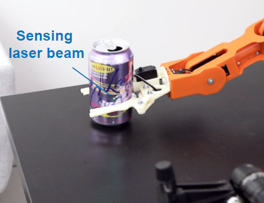

ForceSight: Non-Contact Force Sensing with Laser Speckle Imaging
Siyou Pei, Pradyumna Chari, Xue Wang, Xiaoying Yang, Achuta Kadambi, Yang Zhang (UIST 2022)
We present ForceSight, a non-contact force sensing approach using laser speckle imaging. Our key observation is that object surfaces deform in the presence of force. This deformation, though very minute, manifests as observable and discernible laser speckle shifts, which we leverage to sense the applied force. To investigate the feasibility of our approach, we conducted studies on a wide variety of materials. We also demonstrated the applicability with several example applications.

Hand Interfaces: Using Hands to Imitate Objects in AR/VR for Expressive Interactions
Siyou Pei, Alexander Chen, Jaewook Lee, Yang Zhang (CHI 2022)
Honorable Mention
A new interaction technique that lets users' hands become virtual objects by imitating the objects themselves. For example, a thumbs-up hand pose is used to mimic a joystick. We created a wide array of interaction designs around this idea to demonstrate its applicability in object retrieval and interactive control tasks. Collectively, we call these interaction designs Hand Interfaces.
AURITUS: An Open-Source Optimization Toolkit for Training and Development of Human Movement Models and Filters Using Earables
Swapnil Sayan Saha, Mr. Sandeep Singh Sandha, Siyou Pei, Vivek Jain, Mr. Ziqi Wang, Yuchen Li, Ankur Sarker, Prof. Mani Srivastava (IMWUT 2021)
AURITUS is an extendable and open-source optimization toolkit designed to enhance and replicate earable applications. AURITUS handles data collection, pre-processing, and labeling tasks using graphical tools and provides a hardware-in-the-loop (HIL) optimizer and TinyML interface to develop lightweight and real-time machine-learning models for activity detection and filters for head-pose tracking.

Quick Question: Interrupting Users for Microtasks with Reinforcement Learning
Bo-Jhang Ho, Bharathan Balaji, Mehmet Koseoglu, Sandeep Sandha, Siyou Pei, Mani Srivastava (ICML 2021 Workshop on Human in the Loop Learning)
Human attention is a scarce resource in modern computing. Quick Question explores use of reinforcement learning (RL) to schedule microtasks while minimizing user annoyance and compare its performance with supervised learning. We model the problem as a Markov decision process and use Advantage Actor Critic algorithm to identify interruptible moments.
News
August 2022: Passed the Oral Qualifying Examination at Department of Electrical & Computer Engineering.
May 2022: Reviewed UIST 2022 Papers.
May 2022: Presented Hand Interfaces at CHI '22, New Orleans, LA.
April 2022: Received CHI Honorable Mention Award for Hand Interfaces.
April 2022: Reviewed CHI 2022 Late-Breaking Work.
Mar 2022: Passed the Preliminary Exam at Department of Electrical & Computer Engineering.
Dec 2021: Turned in MS thesis and obtained the MS degree.
Nov 2021: Reviewed CHI 2022 Papers.
Feb 2021: Reviewed CHI 2021 Late-Breaking Work.
Sept 2019: Started MS-Ph.D. program at University of California, Los Angeles.

Tweets by @SiyouPei
© Siyou Pei, Source Code.